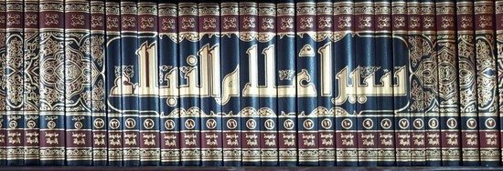

Syaikh Syu’aib al-Arnauth, Seorang Peneliti dan Ahli Hadits
Baru-baru ini, dunia Islam berduka, kehilangan salah seorang putra terbaiknya di zaman ini, Syaikh Syu’aib al-Arnauth. Beliau adalah seorang peneliti hadits yang produktif. Setidaknya, ada 240 buku yang sudah ia tahqiq (kaji dan teliti riwayat-riwayatnya). Pada tanggal 26 Muharam 1438 H bertepatan dengan 27 Oktober 2016, ulama ahli hadits ini meninggal. Rahimahullah rahmatan wasi’atan. Rasulullah ﷺ bersabda:
إِنَّ اللهَ لاَ يَقْبِضُ الْعِلْمَ انْتِزَاعًا يَنْتَزِعُهُ مِنَ الْعِبَادِ، وَلَكِنْ يَقْبِضُ الْعِلْمَ بِقَبْضِ الْعُلَمَاءِ حَتَّـى إِذَا لَمْ يَبْقَ عَالِمًا اتَّخَذَ النَّاسُ رُءُوسًا جُهَّالاً فَسُئِلُوا، فَأَفْتَوْا بِغَيْرِ عِلْمٍ فَضَلُّوا وَأَضَلُّوا.
““Sesungguhnya Allah tidak mencabut ilmu sekaligus dari para hamba, akan tetapi Allah mencabut ilmu dengan mewafatkan para ulama. Ketika tidak tersisa lagi seorang yang berilmu, orang-orang akan menjadikan orang-orang tidak berpengetahuan sebagai pemimpin. Kemudian mereka ditanya, mereka akan memberikan fatwa tanpa ilmu. Mereka sesat lagi menyesatkan orang lain.” (HR. al-Bukhari dan Muslim).
Mengenal Syaikh Syu’aib al-Arnauth
Namanya adalah Syu’aib bin Muharram al-Arnauth. Al-Arnauth adalah sebutan untuk salah satu kabilah di Albania. Keluarganya hijrah dari Albani menuju Damaskus pada tahun 1926. Sejak saat itu, mereka tinggal di wilayah Syam itu. Mereka memilih tanah Syam, karena ayahnya tahu keutamaan Syam dan penduduknya. Ayah Syaikh Syu’aib adalah seorang yang mencintai ulama. Ia juga senang sekali bersahabat bersama para ahli ilmu.
Syaikh Syu’aib al-Arnauth lahir di Damaskus pada tahun 1928. Ia tumbuh besar di bawah bimbingan sang ayah. Ayahnya mengajarinya pondasi-pondasi keislaman. Dan membimbingnya menghafal sejumlah juz Alquran. Keakrabannya dengan Alquran sedari kecil membuatnya bersemangat memahami makna-makna Alquran secara mendalam. Keingin-tahuannya itu menjadi sebab utama yang memotivasinya untuk belajar bahasa Arab di usia yang masih belia. Ia menyibukkan diri di masjid. Mencari majelis-majelis bahasa Arab dan cabang-cabang keilmuannya. Seperti: Sharf, sastra, Balaghah, dll.
Sebagian ulama, seperti Imam Malik, asy-Syafi’i, dll. ibu mereka begitu besar pengaruhnya dalam pertumbuhan keshalehan dan keilmuan mereka. Ada pula yang bapak-bapak merekalah yang dicatat dalam biografi mereka sebagai orang yang berpengaruh dalam keilmuannya.
Belajar dari Para Ulama
Syaikh al-Arnauth muda mulai serius menekuni bahasa Arab. Ia datangi para ustadz dan ulama ahli bahasa Arab di Kota Damaskus. Di antaranya: Syaikh Shaleh al-Farfur, Syaikh Arif ad-Duwaiji –yang merupakan murid dari Syaikh Badruddin al-Husna-, dll. Bersama guru-gurunya itu, Syaikh al-Arnauth mempelajari buku-buku rujukan utama ilmu bahasa Arab dan balaghah. Seperti: Syarah Ibnu Aqil, Kifayah karya Ibnu Hajib, al-Mufashshal karya Zamakhsyary, Syudzur adz-Dzahab karya Ibnu Hisyam, Asrar al-Balaghah, dan Dala-il al-I’jaz karya Jurnany.
Guru-gurunya yang lain adalah Syaikh Sulaiman al-Ghawaji al-Albani, seorang ulama yang mensyarah al-‘Awamil karya al-Baruky, al-Izh-har karya al-Athahly, dll.
Setelah membekali diri dengan kemampuan yang mumpuni dalam bahasa Arab, Syu’aib al-Arnauth mulai mempelajari ilmu Fikih, terutama kajian fikih Madzhab Hanafi. Dalam fan ini, ia pun memiliki banyak guru yang mengajarkannya banyak buku. Buku-buku Madzhab Hanafi yang ia kaji adalah Muraqi al-Falah karya asy-Syarnabilaly, al-Ikhtiyar karya al-Maushuly, al-Kitab karya al-Qadury, dan Hasyiyah Ibnu Abidin.
Selama 7 tahun, ia tenggelamkan dirinya dalam kajian-kajian fikih. Kemudian ia mempelajari Ushul Fiqh, Tafsir Alquran, Musthalah al-Hadits, dan buku-buku akhlak. Saat itu usia beliau sudah lebih dari 30 tahun.
Menjadi Peneliti Hadits (Muhaqqiq)
Saat mempelajari fikih, Syaikh al-Arnauth rahimahullah bersentuhan dengan status sebuah hadits, shahih atau tidak. Hal ini memotivasinya untuk meneliti buku-buku fikih yang muatan materinya adalah hadits. Ia memfokuskan diri pada penelitian tersebut. Sampai akhirnya, ia menjadi spesialis dalam kajian ini. Cabang keilmuan yang baru ia tekuni ini bukanlah permasalahan ringan. Butuh waktu yang luas dan fokus yang luar biasa. Karena itu, sejak tahun 1955, ia meninggalkan pengkajian bahasa Arab. Mulailah ia menghabiskan waktunya untuk meneliti warisan Islam.
Pada tahun 1982, Syaikh al-Arnauth pindah ke Omman. Di tempat baru ini, ia menjalin kerja sama dengan percetakan Muassasah ar-Risalah. Di percetakan ini, keahliannya makin terasah. Ia mengeluarkan usaha terbaik berkhidmat kepada Islam dan kaum muslimin dengan meneliti warisan peradaban Islam.
Rujuk ke Aqidah Salaf
Dalam sebuah rekaman, Syaikh Syu’aib al-Arnauth menceritakan sedikit fase kehidupan ke-agama-annya. Syaikh ditanya, “Wahai Syaikh, -segala puji bagi Allah- Anda berakidah salaf.” “Insya Allah,” jawab Syaikh Syu’aib. Penanya melanjutkan, “Tapi, di tempat kami ada Madrasah Asy’ariyah yang mengatakan Anda adalah seorang Asy‘ari. Dan ahli hadits dari kalangan Asy‘ari. Kami ingin mendengar langsung dari Anda.”
Syaikh Syu’aib menjawab, “Tidak, demi Allah. Pada awal perjalanan hidupku, guru-guruku berakidah Maturidiyah. Namun, saat aku mulai menulis, ku temukan sebuah buku yang berjudul Aqawil ats-Tsiqat fi Itsbati al-Asma wa ash-Shifat karya Mar’i bin Yusuf al-Karmi. Dalam buku tersebut terdapat pembelaan terhadap Madzha as-Salaf, dan inilah yang aku yakini sekarang. Madzhab as-Salaf lebih selamat dan lebih berlandaskan ilmu. Dalam masalah sifat Allah, kita harus menetapkan apa yang Allah tetapkan untuk diri-Nya. Tanpa tasybih (menyerupakan) dan juga ta’thil (mengingkari). Kita tidak boleh menyamakan Allah (dengan sesuatu) dan mengingkari sifat-Nya. Dan saya meyakini bahwa sifat-sifat Allah itu tidak mampu dijangkau akal. Setiap malam, Allah Rabbul ‘alamin turun ke langit dunia. Ini terdapat dalam hadits riwayat al-Bukhari dalam Shahih-nya. Kita harus beriman Allah turun, tapi kita tidak mengetahui bagaimana tata cara turun-Nya.”
Murid-Muridnya
Syaikh Syu’aib al-Arnauth memiliki murid yang banyak. Di antaranya: Muhammad Na’im al-‘Arqasusi, Ibrahim az-Zaibeq, Adil Mursyid, Umar Hasan al-Qayyam, Abdul Lathif Hirazullah, Ahmad Barhum, Ridwan al-‘Arqasusi, dan Kamil Qurah Bilali.
Syaikh al-Arnauth memiliki perhatian besar terhadap kemampuan ilmiah murid-muridnya. Ia langsung memberikan beban penelitian kepada mereka yang telah ia akui kredibilitasnya. Metode dan gaya tahqiq hadits yang dilakukan oleh murid-murid Syaikh al-Arnauth sangat mirip dengan gurunya. Demikianlah memang, tradisi keilmuan seseorang akan terjaga dengan banyaknya murid. Sebagaimana madzhab yang empat, tetap terjaga hingga kini karena murid-murid empat imam tersebut mencatat, membukukan, dan mendakwahkan metodologi kajian fikih mereka. Sedangkan madzhab-madzhab fikih yang lain hilang, karena tidak ada yang mewariskan.
Syaikh Na’im al-‘Arqasusi berkata dalam pengantar tahqiq kitab Taudhih al-Musytabah karya Ibnu nashiruddin, “Kuucapkan terima kasih yang besar terkhusus kepada dia, yang bukan kalau karena perhatian dan bimbingannya, aku tidak mampu meneliti warisan-warisan Islam. Kepada dia yang pantas mendapatkan pernghormatan. Seorang yang mulia, yang terhormat guruku, Syaikh Syu’aib al-Arnauth hafizhahullah.”
Syaikh Ibrahim az-Zaibeq juga mengucapkan terima kasihnya kepada sang guru yang begitu berpengaruh pada keilmuannya. Ia mengucapkan terima kasihnya di pengantar tahqiq kitab Thabaqat Ulama al-Hadits karya Ibnu Abdul Hadi, “Selanjutnya.. apakah cukup kalimat syukur kupersembahkan kepada guruku syaikh-ku, Syu’aib al-Arnauth? Apakah cukup kalimat pujian dariku yang kutulis untuknya dengan penuh cinta yang tulus? Sungguh jasanya terhadapku lebih luas dari rasa terima kasih dan lebih mulia dari pujian. Sesungguhnya dia membukakan mataku tentang hakikat kehidupan. Aku mengalami perjalananku dengan pikiran yang tertunduk dan hati yang rendah, ia menjadikan hari-hariku menjadi tahun yang penuh arti dan berharga. Kemudian ia menggandeng tanganku memasuki dunia tahqiq… …Untukmu wahai guruku, terima kasih yang lebih luas dari terima kasih itu sendiri, pujian yang lebih agung dari pujian itu sendiri. Dan Allah yang menjadi penolongku membalasmu dengan sebaik-baik balasan.”
Alangkah indahnya penghormatan sang murid kepada gurunya ini.
Syaikh Umar Hasan al-Qayyam mengatakan dalam pengantar tahqiq-nya terhadap Risalah Ibnu Rajab al-Hanbali, “Dia memotivasiku untuk menempuh jalan ini, guruku al-muhaddits al-‘alamah Syu’aib al-Arnauth, salah seorang pakar hadits di masa sekarang ini.”
Hubungan Syaikh Syu’aib al-Arnauth dengan murid-muridnya layaknya hubungan pertemanan. Ia dekat dengan murid-muridnya. Memiliki semangat besar agar murid-muridnya mendapatkan kebaikan. Ia tidak memaksakan pendapatnya kepada murid-muridnya. Ia senang jika murid-muridnya memiliki keilmuan yang mandiri. Tidak jarang ia mengajak murid-muridnya berdiskusi dan bertukar pikiran. Hal inilah yang memiliki pengaruh luar biasa dalam perkembangan keilmiahan murid-muridnya.
Karya-Karya Penelitiannya
Buku-buku yang diteliti oleh Syaikh Syu’aib al-Arnauth tidak kurang dari 240 judul buku. Terdiri dari buku-buku hadits, fikih, tafsir Alquran, tarajim, akidah, mushthalah al-hadits, adab, dll.
Di antara buku yang ia teliti adalah:
Diterbitkan oleh Maktab al-Islami:
1. Syarhu as-Sunnah karya al-Baghawi berjumlah 16 jilid,
2. Raudhatu ath-Thalibin karya an-Nawawi. Penelitian bekerja sama dengan Syaikh Abdul Qadir al-Arnauth. Buku tersebut terdiri dari 12 jilid.
3. Muhadzdzab al-Aghani karya Ibnu Manzhur berjumlah 12 jilid.
4. Al-Mubdi’ fi Syarhi al-Muqni’ karya Ibnu Muflih al-Hanbali berjumlah 10 jilid.
5. Zad al-Masir fi Ilmi at-Tafsir karya Ibnu al-Jauzi. Penelitian ini bekerja sama dengan Syaikh Abdul Qadir al-Arnauth. Buku tersebut terdiri dari 6 jilid.
6. Mathalib Ulin Nuha fi Syarhi Ghayatu al-Muntaha karya ar-Ruhaibani. Penelitian ini bekerja sama dengan Syaikh Abdul Qadir al-Arnauth. Terdiri dari 6 jilid.
7. Al-Kafi fi Fiqhi al-Imam al-Mubajjal Ahmad bin Hanbal karya Ibnu Qudamah. Penelitian ini bekerja sama dengan Syaikh Abdul Qadir al-Arnauth. Terdiri dari 3 jilid.
8. Manaru as-Sabil fi Syarhi ad-Dalil karya Ibnu Dhuyan. Teridir dari 2 jilid.
9. Al-Manazil wa ad-Diyar karya Usamah bin Munqidz. Terdiri dari dua jilid.
10. Musnad Abu Bakar karya al-Marwazi. Terdiri dari dua jilid.

Siyar-Alam-an-Nubala, salah satu judul buku yang riwayatnya satu per satu diteliti oleh Syaikh Syu’aib al-Arnauth rahimahullah.Diterbitkan oleh Muassasah ar-Risalah:
1. Siyar A’lam an-Nubala karya adz-Dzahabi. Terdiri dari 20 jilid.
2. Al-Ihsan fi Tarqrib Shahih Ibnu Hibban yang disusun oleh al-Amir Alaunddin al-Farisi. Terdiri dari 18 jilid.
3. Sunan an-Nasai al-Kubra. Penelitian ini bekerja sama dengan Hasan Syalbi. Teridir dari 12 jilid.
4. Al-‘Awashim wa al-Qawashim fi adz-Dzabbi ‘an Sunnati Abi al-Qasim karya Ibnu al-Wazir.
5. Sunan at-Turmudzi. Terdiri dari 6 jilid.
6. Sunan ad-Daruquthni. Penelitian ini bekerja sama dengan Hasan Syalbi. Terdiri dari 5 jilid.
7. Zaad al-Ma’ad fi Hadyi Khoiri al-‘Ibad karya Ibnul Qayyim. Penelitian ini bekerja sama dengan Syaikh Abdul Qadir al-Arnauth. Terdiri dari 5 jilid.
8. Tarikh al-Islam karya adz-Dzahabi. Penelitian ini bekerja sama dengan Dr. Basyar ‘Iwadh Ma’ruf. Syaikh al-Arnauth meneliti 4 jilid.
9. At-Ta’liq al-Mumajjad Syarh Muwaththa Muhammad karya Abu al-Hasanat al-Lakuni. Terdiri dari 4 jilid.
10. Musnad al-Imam Ahmad terdiri dari 5 jilid.
11. Al-Adab asy-Syar’iyah wa al-Minah al-Mar’iyah karya Ibnu Muflih al-Hanbali. Penelitian ini bekerja sama dengan Umar Hasan al-Qayyam. Terdiri dari 4 jilid.
12. Thabaqat al-Qurra’. Penelitian ini bekerja sama dengan Dr. Basyar Ma’ruf. Terdiri dari 2 jilid.
13. Mawarid azh-Zham-an bi Zawa-id Shahih Ibnu Hibban karya al-Hasyimi. Penelitian ini bekerja sama dengan Ridhwan al-‘Arqasusi. Terdiri dari 2 jilid.
14. Syarh al-Aqidah ath-Thahawiyah karya Ibn Abi al-Iz. Penelitian ini bekerja sama dengan Dr. Abdullah at-Turki. Terdiri dari 2 jilid.
15. Riyadhush Shalihin karya an-Nawawi. Teridir dari 2 jilid.
16. Al-Marasil karya Abu Dawud. Terdiri dari 2 jilid.
Dua Ulama al-Aranauth
Selain Syaikh Syu’aib, ada lagi ulama lain yang berlaqob al-Arnauth, yaitu Syaikh Abdul Qadir al-Arnauth. Namun keduanya bukanlah saudara kandung. Keduanya memiliki kesamaan dari sisi:
Pertama: memiliki laqob al-Arnauth. Al-Arnauth sendiri laqob yang diberikan kepada orang-orang Balkan yang berasal dari al-Albani. Syaikh Abdul Qadir lahir di wilayah Kosovo, sedangkan Syaikh Su’aib berasal dari Albania.
Kedua: keduanya adalah ulama ahli tahqiq yang bekerja sama dengan al-Maktab al-Islami. Ada buku-buku yang mereka teliti bersama.
Porsi dakwah Syaikh Abdul Qadir al-Arnauth lebih besar pada ceramah dan mengajar. Sedangkan Syaikh Syu’aib al-Arnauth lebih memfokuskan diri dalam meneliti warisan-warisan Islam.
Wafatnya Sang Ahli Tahqiq
Syaikh Syu’aib al-Arnauth wafat pada hari Kamis 26 Muharram 1438 H bertepatan dengan 27 Oktober 2016. Beliau wafat di wilayah Yordania pada usia 88 tahun. Rahimahullah rahmatan wasi’atan.
Rujukan:
Buku al-Muhaddits Syu’aib al-Arnauth, Jawanib min Siratihi wa Juhudihi fi Tahqiq at-Turats oleh Dr. Ibrahim al-Kufihi. Dicetak oleh Dar al-Basyidr, Oman. Cetakan pertama. Tahun 1423 H/2002 M.